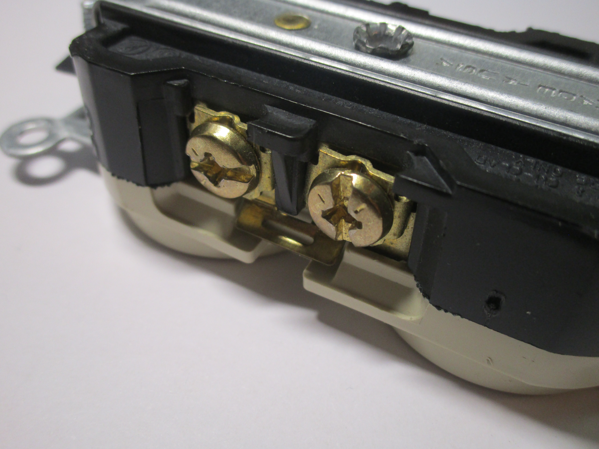
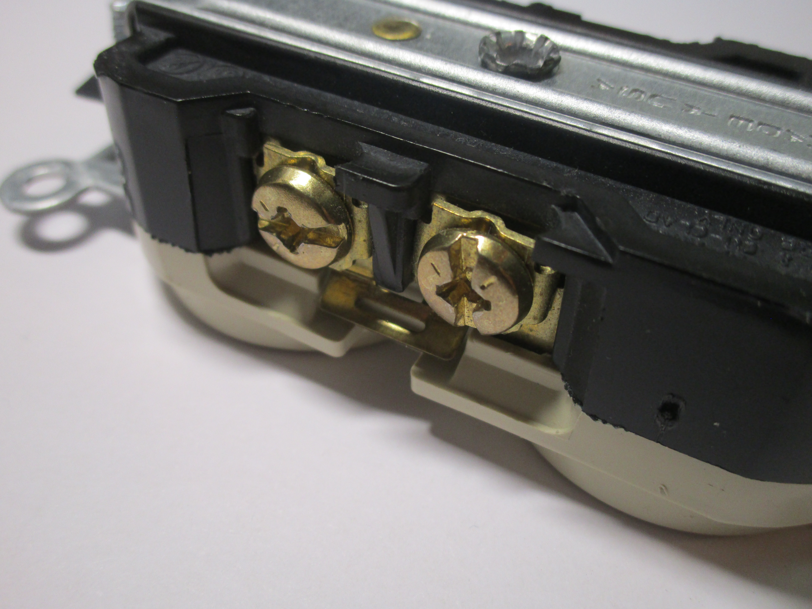
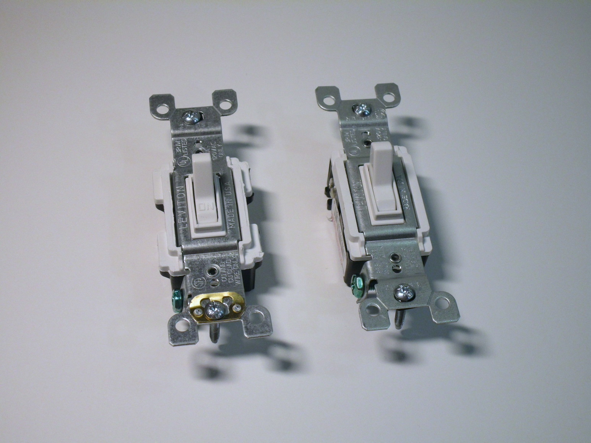
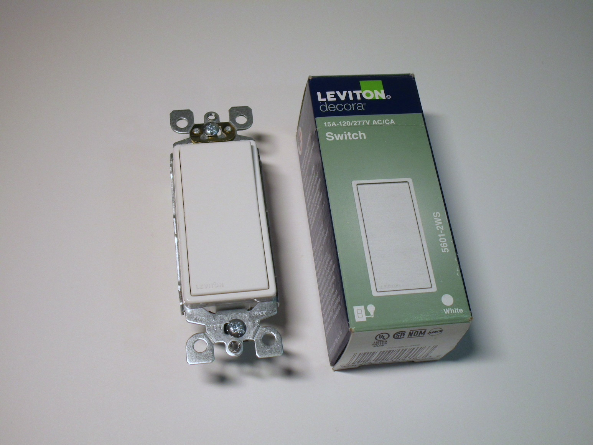

Electrical items from other countries
North American 15A and 20A power sockets


These are some standard North American 15A and 20A sockets - the 20A being made by Leviton and the 15A by Cooper. Of course the shape of the sockets is completely different from the European types, that's obvious, but the interesting thing is how different these sockets are built compared to the Italian ones, which is what I'm used to.
Let's start by looking at the front cover plate: the decorative plate on the American outlets mounts with one or more screws (depending on the style of the socket - in this case it's just one screw) to the device itself, though there are also some clip-on covers that you can buy instead that hide the screws, and it's the only thing separating you from the live connections inside. The cover plates can actually vary depending on what device you're mounting, which means that if you want to change the device (for example, if you need a second lightswitch) you might have to buy a new cover plate as well.
 

{kind=link}
Connecting the wires can be done using two methods, depending on the type of the socket. The 15A one allows you to
connect them using "push-in" slots on the rear, however I've heard a lot of complaints about this method of
installation and in fact the 20A one lacks this option entirely.
The best method is to use the screws on the side: the wire goes around them and is then tightened by the screw.
The screws also have a little metal connection that can be removed in case you want to wire up the two sockets to
different circuits (for example, you could leave the top one always on while the other one could be controlled by a
lightswitch).
Other, more expensive, sockets use instead a rising clamp terminal, which is a better connection method.
This is how the sockets I've used are wired up (though I don't know if it's common across all brands).
The way these kinds of outlets mount is pretty interesting: they use a metal piece built into the device itself, which contains holes for the screws that are used to mount the outlet into the wall box. In contrast, the Italian sockets don't screw into the wall box directly, instead they're modules that clip onto a support bracket, generally made of plastic, which is then what screws into the wall.
This is, in my opinion, the most important difference between the two systems: the Italian way of using modular devices (which I can only imagine became popular due to the number of various sockets we have) is actually not all that common in other countries, the US included (I know there are some systems there that try to replicate the same concept, but they're not common). The lack of modularity in North American devices does make them less flexible, however it's not a big problem in most cases, and it might even make installing them easier.

Lastly, it's interesting to note that the North American devices can mount in a standard Italian 503 box (which is the most common size). This is because the modern Italian wall box was actually derived from the American standard (before that the boxes that were used were circular).
Lightswitches
 {kind=link}
{kind=link}
GFCI

Light socket to outlet adaptors


Ground defeater adaptors